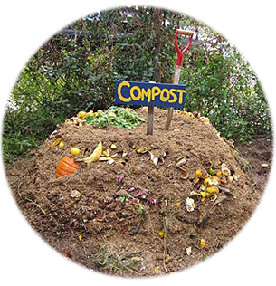
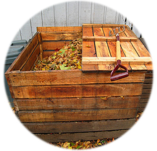
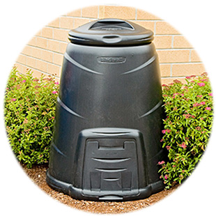

Kompostiranje
Kompostiranje je razgradnja organskog otpada pod dejstvom mikroorganizama uz prisustvo kiseonika. Dobijeni proizvod je kompost, veoma koristan materijal, sličan humusu, bez neprijatnog mirisa koji se može koristiti u mnoge svrhe, najčešće za kondicioniranje zemljišta ili kao đubrivo. Kvalitetan kompost može biti napravljen od različitih organskih materija - kuhinjskog i baštenskog otpada. Na taj način ne samo što ćete zbrinuti organski otpad već ćete ujedno reciklirati hranjive sastojke i pomoći u rešavanju problema otpada.
Prostor za kompostiranje
Idealno mesto za kompostište je osunčani prostor dostupan za manipulaciju, koji nije u blizini velikog drveća. Najpoželjniji bi bio blago nagnuti teren da bi se izbeglo zadržavanje vode. Kompostište ne sme imati nepropusnu podlogu (beton, cigla, asfalt, drvo). Možete kompostirati u slobodnostojećoj hrpi, ograđenim komposterima (od dasaka, cigle, žicom), zatim u kupovnim ili namenskim kantama za kompostiranje. Posude za kompostiranje se mogu kupiti ili samostalno napraviti.
Slobodnostojeće hrpe
Najjednostavniji način kompostiranja je u hrpama. Hrpa bi trebala biti visoka i široka oko 1 - 1,5 m, dok dužina hrpe zavisi od količine materijala kojeg imamo na raspolaganju. Prednosti: lakši pristup kompostnom materijalu, lakše preokretanje i kontrola vlažnosti i prozračnosti. Nedostatak: kompostna hrpa zauzima više mesta nego komposteri od dasaka ili kante za kompostiranje.
Ograđeni komposteri
Druga solucija je odlaganje organskog otpada u kompostere, izrađene od dasaka, žice, ili cigle. Na taj način može se uštedeti prostor i postići uredan izgled kompostišta i vrta. Za kompostere bi se trebala predvideti površina od oko 3 - 4 m2, sa 2 - 3 pregrade. Pregrade se pune redom.
Kante za kompostiranje
U slučaju nedovoljnog prostora, najbolje rešenje je kompostirati u specijalnoj posudi - komposteru, koji se može držati na tersasi, ili u garaži. Na našem tržištu nema u prodaji gotovih kompostera, ali se oni mogu jednostavno napraviti od stare metalne ili plastične buradi, na kojoj se izbuše otvori za provetravanje. Posude moraju biti bez dna zbog drenaže, kao i zbog prodora mikroorganizama, glista i insekata u kompost. Radi lakšeg uzimanja gotovog komposta bure se može postaviti na nekoliko opeka, ili se može napraviti otvor pri dnu.
"Zeleni" i "smeđi" kompost
Zeleni materijali su bogati proteinima. Oni pomažu bržem rastu korisnih mikroorganizama. U zeleni kompost se ubrajaju:
- trava
- talog kafe
- filter vrećice čaja
- ostaci voća i povrća
- izmet krave, konja ili ovce
Smeđi materijali bogati su ugljenim hidratima. Smeđi kompost služi kao izvor hrane za mikroorganizme. U smeđi kompost se ubrajaju:
- otpalo lišće iz vrta
- borove iglice
- kora drveća,
- grančice,
- slama, seno, piljevina
- papir,
- pamučna tkanina
Ne smeju se kompostirati:
- osemenjeni korovi
- lišće oraha
- bolesne biljke
- ostaci kuvanih jela
- proizvodi životinjskog porekla
- velike količine novinskog papira i časopisa u boji
- pelene
- ostaci duvana
- sadržaj vrećica iz usisivača
- pepo kamenog i crnog uglja
- otpaci sa hemikalijama: stari lekovi, ulja, plastična ambalaža, bojeno drvo, stiropor, metal, staklo
S obzirom da se neki organski otpaci teško razgrađuju, nije preporučljivo stavljati u kompost velike količine takvih otpadaka. Tu spadaju: čepovi od pluta, ljuske oraha, kosti itd.
Proces kompostiranja
Pre stavljanja otpadaka na komposište, skine se mali sloj zemlje i na tlo se stavi drenaža od grančica, krupnih stabljika kukuruza i sl., potom sloj od 15-20 cm otpadaka i sloj zemlje od 5 cm. Slaganje slojeva se ponavlja naizmenično i može ići do visine od 1 m sa završnim slojem zemlje od 10 cm.
Faktori koji utiču na kvalitet komposta su:
- sastav kompostnog materijala,
- vlažnost,
- prozračnost kompostne hrpe,
- temperatura,
- usitnjenost materijala za kompostiranje.
Gotov kompost
Zreo kompost je ujednačenog izgleda, grumenast, tamnosmeđe do crne boje i miriše na šumsku zemlju. U njemu se ne prepoznaje početni biomaterijal, osim ponekih teže razgradivih delova poput koštica voća, komadića drva itd.
Nezreo kompost nema tamnu boju i kiselkastog je mirisa. U njemu se mogu naći ostaci lako razgradivih materija poput lišća, ostataka povrća i sl. Takav kompost mora još neko vreme odstojati.
Kompost - obnovljivi izvor energije
Kompost sve značajniju primenu i efikasnost nalazi u proizvodnji biogasa. Sve vrste organskih materija, uključujući i stajsko đubrivo, mogu da se koriste za proizvodnju biogasa. Biogas se proizvodi anaerobnim razaranjem (niz procesa u kojima mikroorganizmi razgrađuju biorazgradive materijale u odsustvu kiseonika) biorazgradivih materijala.
Biogas sadrži približno 45-70% metana, koji može da se sagoreva, a oslobađanje energije omogućava da se biogas koristi kao gorivo. Bioreaktori se često grade na životinjskim farmama, a energija koju proizvode koristi se za dobijanje energije za kuvanje, grejanje, zajedno sa napajanjem električnom energijom čitavih farmi, koje mogu same da se održavaju s energetske tačke gledišta.
Problemi
Kompost ne sme biti prevlažan. Ukoliko dođe do toga, trebala bi se omogućiti drenaža suvišne vode, ili dodavanje suvog komposta poput novina, ili piljevine. Ukoliko je kompost presuv, potrebno ga je zaliti vodom, ili dodati biljne ostatke.
Kompost bi trebalo povremeno promešati, kako se ne bi usmrdeo i zbog dotoka kiseonika koji ubrzava proces nastajanja humusa. Redovno mešanje komposta obezbeđuje vazduh bakterijama. Hrpa se okreće na otprilike svaka tri meseca, ili kada se hrpa očigledno slegne.
Zagrevanje komposta je jako važno, jer se na taj način uništava seme korova, uzročnici bolesti i nametnici. Idealna temperatura u sredini hrpe komposta je 50 - 70 °C. Kompostnu hrpu bi trebalo pokriti, jer se na taj način kompost štiti od svetla, preterane vlage u zimskim, i prevelike suše u letnjim mesecima. Pogodan sloj za prekrivanje je tanki sloj zemlje, suva trava, lišće, seno ili karton.
Saveti
U proleće ili pre sadnje, kompost bi trebalo posuti po tlu i lagano izmešati sa površinskim slojem zemlje. Ako se koristi za uzgoj saksijskog i balkonskog cveća, mora se u podjednakoj količini mešati sa zemljom iz vrta ili sa starom zemljom iz saksije. Količina komposta u povrtarstvu zavisi i od vrste povrća.
Za sadnju novog drveta potrebno je iskopati rupu adekvatne veličine. Pre sadnje drveta neko vreme stavljajte biološki razgradiv kuhinjski otpad na dno rupe. Na taj način ćete zemlju u koju planirate zasaditi drvo obogatiti hranjivim materijama.
Ukoliko hoćete da zadržite plodno tlo koje ćete u budućnosti iskoristiti za sadnju, organski kuhinjski otpad stavite na površinu zemlje. Na taj način ćete sprečiti isušivanje zemlje i rast korova.
Ako su vam potrebne hranjive materije za zalivanje vrta, organski otpad možete odlagati u veliku kantu ili bure i jednostavno čekati da istrune, a potom ga iskoristiti.

Sortiranje otpada
Kompostiranje